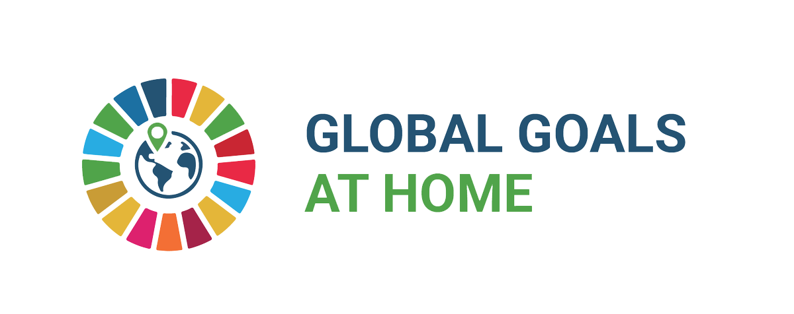
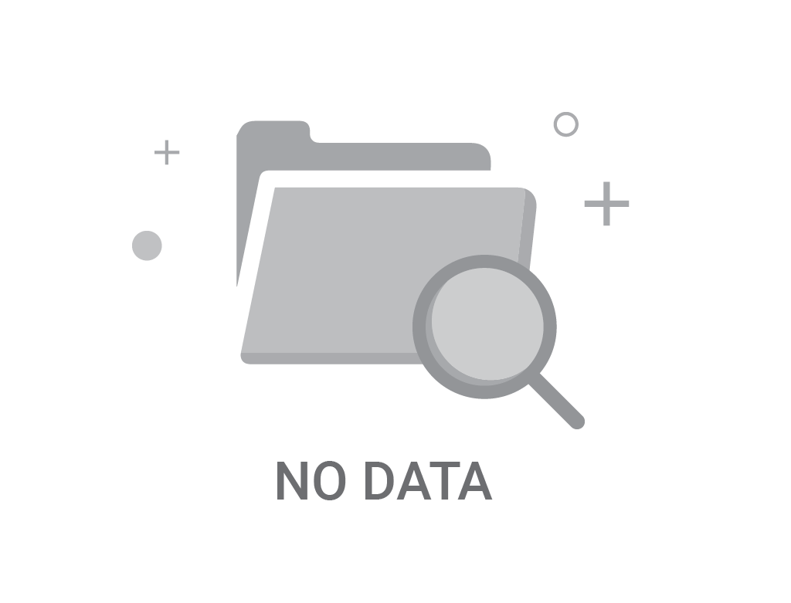

Dashboard
About
Research
1.a.1 Total official development assistance grants from all donors that focus on poverty reduction as a share of the recipient country’s gross national income

No data

1. Zero Poverty
1.1 By 2030, eradicate extreme poverty for all people everywhere, currently measured as people living on less than $1.25 a day
1.1.1 Proportion of the population living below the international poverty line by sex, age, employment status and geographic location (urban/rural)
1.2 By 2030, reduce at least by half the proportion of men, women and children of all ages living in poverty in all its dimensions according to national definitions
1.2.1 Percent of population living below the national poverty line, by sex and age
1.2.2 Proportion of men, women and children of all ages living in poverty in all its dimensions according to national definitions
1.3 Implement nationally appropriate social protection systems and measures for all, including floors, and by 2030 achieve substantial coverage of the poor and the vulnerable
1.3.1 Proportion of population covered by social protection floors/systems, by sex, distinguishing children, unemployed persons, older persons, persons with disabilities, pregnant women, newborns, work-injury victims and the poor and the vulnerable
1.4 By 2030, ensure that all men and women, in particular the poor and the vulnerable, have equal rights to economic resources, as well as access to basic services, ownership and control over land and other forms of property, inheritance, natural resources, appropriate new technology and financial services, including microfinance
1.4.1 Proportion of population living in households with access to basic services
1.4.2 Proportion of total adult population with secure tenure rights to land, (a) with legally recognized documentation, and (b) who perceive their rights to land as secure, by sex and type of tenure
1.5 By 2030, build the resilience of the poor and those in vulnerable situations and reduce their exposure and vulnerability to climate-related extreme events and other economic, social and environmental shocks and disasters
1.5.1 Number of deaths, missing persons and directly affected persons attributed to disasters per 100,000 population
1.5.2 Direct economic loss attributed to disasters in relation to global gross domestic product (GDP)
1.5.3 Number of countries that adopt and implement national disaster risk reduction strategies in line with the Sendai Framework for Disaster Risk Reduction 2015–2030
1.5.4 Proportion of local governments that adopt and implement local disaster risk reduction strategies in line with national disaster risk reduction strategies
1.a Ensure significant mobilization of resources from a variety of sources, including through enhanced development cooperation, in order to provide adequate and predictable means for developing countries, in particular least developed countries, to implement programmes and policies to end poverty in all its dimensions
1.a.1 Total official development assistance grants from all donors that focus on poverty reduction as a share of the recipient country’s gross national income
1.a.2 Proportion of total government spending on essential services (education, health and social protection)
1.b Create sound policy frameworks at the national, regional and international levels, based on pro-poor and gender-sensitive development strategies, to support accelerated investment in poverty eradication actions
1.b.1 Pro-poor public social spending